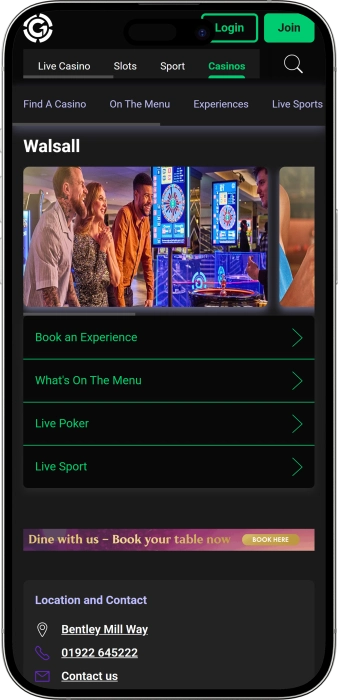

Exclusive welcome offer of
Exclusive welcome bonus of
Grosvenor Casino Walsall — gaming, poker, atmosphere, and a night out
Top Casinos
Bonus Details
Casino
Bonuses
Rate
Free Spins
More Info
Get
Advantages
-
Wide range of slots and electronic games
-
Live tables with skilled, friendly dealers
-
Regular poker tournaments and cash games
-
Game promotions with match-play style offers
-
Jackpot chances and prize-led events
-
Comfortable atmosphere for a night out
-
Convenient location with nearby parking
- This casino works well for an all-in-one night: live gaming, slots, and poker in one venue. It’s easy to mix play with a relaxed drink and a bite to eat. Staff typically help new guests feel confident at the tables.
Grosvenor Casino Walsall App


About Grosvenor Casino Walsall
What makes it stand out is the steady flow of prize-led activity: tournament nights, themed promos, and scheduled draws. It also feels like a complete night out, with gaming, drinks, and a social vibe in one place.
- Prizes up to £10,000+
- Match-play up to £50
- Poker guarantees up to £5,000
Grosvenor Casino Walsall is a modern land-based casino designed for gaming, socialising, and a relaxed night out. The interior typically uses comfortable lighting and a practical layout that makes it easy to move between areas.

Guests are welcomed by staff who guide registration and help with the basics. The slots and electronic games section suits quick sessions and a fast pace. For a classic experience, live tables with dealers provide familiar rules and steady gameplay. Poker adds a more competitive, community feel, with regular get-togethers and organised events. The atmosphere tends to work for both first-timers and experienced players. You can keep the evening varied by switching between games and taking breaks at the bar. Across the week, there are often themed offers and small guest-focused activities. Overall, it blends entertainment, service, and a focused gaming environment.
Grosvenor Casino Walsall: atmosphere, gaming, and a complete night out
Grosvenor Casino Walsall comes across as a modern city casino with a clear, practical flow: the entrance area, gaming floors, poker space, and rest zones are typically separated so they don’t clash. Visually, it often leans on darker tones, soft lighting, and neatly arranged gaming islands that feel private even when the venue is busy. Music usually stays in the background, keeping conversation easy and focus intact. The overall feel lets you pick your pace, from a calm table session to quicker spins on the slots.
Opening patterns in venues like this are often designed for late-evening visitors, so it’s comfortable to arrive late and still have a full experience. Live tables can have defined peak operating windows, while slots and electronic gaming tend to remain available for longer. That flexibility suits guests who like to break the night into stages: drinks first, gaming after, then a pause to reset. The venue’s rhythm supports an unhurried, “stay as long as you like” kind of evening.
The bar area typically acts as the social hub, where people chat about hands, watch broadcasts, and take proper breaks between sessions. You can usually expect a core bar menu, light bites, and comfortable seating. On certain nights, the bar can become the event focal point with themed activity, music-led ambience, and small prize moments. It’s the space that helps you shift gears, so the visit doesn’t feel like non-stop play.
An on-site hotel is not usually essential because nearby accommodation options often cover different budgets, from practical chain stays to more comfortable weekend choices. This is useful for guests who want to stay overnight after late play or tournament sessions. Staff commonly help with timing and simple logistics so the night runs smoothly. That becomes especially helpful when you’re visiting as a group or planning around a specific event.
Events and entertainment in casinos like this usually revolve around gameplay and atmosphere: poker nights, themed tournament days, mini-series, and seasonal activities. These are supported by guest offers such as selected-game nights, prize draws, and small perks tied to participation. Bonus-style benefits are often linked to a guest card, where play earns points that can be exchanged for advantages. Loyalty programmes typically reward regular visitors with better value and a more personalised experience over time.
Service, payments, and collecting winnings: how it works
Staff in venues like this typically follow clear hospitality standards: you’re greeted, guided through entry rules, and helped to register quickly. At live tables, dealers explain stake options and the flow of play, especially if you’re new to a particular game. In the poker area, there’s often a dedicated team member managing seating, lists, and event sign-ups. The tone is usually friendly, while the floor remains disciplined and rules-led.
English is the main language of service, but busy casino environments often include guests and staff with varied backgrounds. If you need clarity, it’s normal to ask for a simpler explanation of limits, procedures, or chip handling. The bar area tends to be more casual, while gaming interactions stay precise and practical. For a smoother visit, it helps to prepare questions about minimum stakes, tournament formats, and cash-out steps.
On-site transactions are generally centred on pounds sterling, with cash and bank cards being the most common options. You typically buy chips or electronic credit at the cashier desk, then exchange any remaining balance back when you finish. Debit cards and contactless payment are often used at the bar, while certain funding methods may be restricted by internal policies and responsible gambling requirements. For specific transactions, proof of identity can be requested as part of standard financial safeguarding.
Cash machines are often available on-site or very nearby, making it easy to withdraw cash when needed. Full currency exchange is not always offered, so visitors carrying foreign currency usually rely on normal bank conversion routes. If you’re planning higher spend, it’s sensible to confirm cashier limits and funding options early, rather than during peak hours. A clear, planned approach keeps the evening calm and straightforward.
Collecting winnings in a land-based setting is most commonly done at the cashier: chips and vouchers are exchanged for cash, or a payout is arranged under venue rules. For larger amounts, additional checks can be required, including identity verification and source-of-funds checks, which is standard for compliance. From a player perspective, winnings are commonly not subject to a separate player tax in everyday scenarios, though personal circumstances can vary. If you play frequently or at higher levels, keeping personal records can be a smart habit.
Visitor rules: dress code, entry, and getting there
A casino visit usually begins with age checks and registration, so bring valid photo ID. Entry control can be stricter during late evenings and on busy event nights, when the venue is fuller. The dress code is most often smart casual, keeping the atmosphere polished without being overly formal. Sportswear, dirty footwear, or an excessively messy look can lead to refusal at the door. Inside, you’re expected to follow conduct rules: don’t disturb other players, don’t argue with the dealer, and don’t interfere with anyone else’s play. Photography is often restricted in gaming areas to protect privacy. Smoking is typically limited to designated areas, while live tables and slots floors follow tighter rules. If you’re visibly intoxicated, you may be refused entry or asked to leave. For a smooth night, plan transport in advance, especially if you intend to stay late. Nearby parking is a benefit, but spaces can fill up at peak times. If you use a taxi, choosing a clear drop-off point and planning a return time makes the evening easier.
Entry essentials:
- • Age & ID: adults only; photo ID required.
- • Registration: quick sign-up at the door; a simple profile may be needed.
- • Conduct: respect staff and guests; follow game rules.
- • Privacy: limits on photos/videos in gaming areas.
Dress code:
- • Recommended: neat everyday clothing, clean shoes.
- • Not encouraged: tracksuits, beachwear, overly dirty or torn outfits.
- • Late hours: a smarter look is usually preferred.
Restrictions:
- • Alcohol: entry can be refused if heavily intoxicated.
- • Play: no coaching at tables, no interference, no aggressive behaviour.
- • Security: bag checks and compliance with house rules.
Parking and travel:
- • Parking: convenient for evening visits; arrive earlier on busy nights.
- • Taxis: ideal for late finishes; easier with a planned pick-up.
- • Public transport: fine earlier; late-night frequency can be lower.
Loyalty programme: points, tiers, and member benefits
A casino loyalty programme across a wider venue network is usually designed to reward repeat play and make each visit feel better value. You get a card or a digital profile where earning is tracked across slots, electronic games, live tables, and poker. The more often you visit and the more you play, the more points you build and the higher your tier becomes. Points can be exchanged for perks such as complimentary items, entry into member prize draws, invitations to events, and sometimes game-style offers like match-play vouchers or promotional credit. Earning methods typically differ by game type: electronic play can be more directly tracked, while live tables often use time and average stake assessment. Tiers add comfort as well as rewards, offering priority access, smoother service, and more tailored promotions. A loyalty profile can also support responsible play by showing a clear record of visits and activity. For new guests, sign-up is usually quick and can unlock a starter perk. For regulars, tiers and personalised offers are the main appeal because they align with how you play. Tier names and exact formulas can vary, but the “play more, gain more benefits” structure is the common core.
Registration conditions:
- • ID: photo ID to create a member profile.
- • Sign-up: at a desk or via an on-site digital profile.
- • Activation: card/profile is typically live immediately after verification.
- • Starter perk: often £5–£20 as a promo play voucher or visit coupon.
Tiers and how to reach them
- • Base: immediate access; earn points each session.
- • Silver: from 1,000 points in the period; small recurring perks.
- • Gold: from 5,000 points; priority access and stronger offers.
- • Platinum: from 15,000 points; personalised invites and improved conversion.
- • Elite/Black (invite): 30,000+ points or selected activity; top-tier privileges.
Bonuses and perks
- • Points-to-play exchange: promo credit £10 / £25 / £50 depending on tier and balance.
- • Table match-play: vouchers £10–£50 on selected nights.
- • Slot challenges: races/targets with prize pools £500–£2,000.
- • Poker perks: small buy-in support £5–£20 on specific dates.
- • Prize draws: drops and raffles with prizes £100–£1,000.
- • Member events: invite-only evenings, sometimes with a welcome complimentary.
- • Priority service: faster tournament registration and priority access at selected events.
Software Providers
Entertainment and Gaming at grosvenor casino walsall
Bonuses and special offers: promos, tournaments, and seasonal events
Beyond loyalty, land-based casinos often run separate promotions that add pace to the experience and create a stronger competitive feel. These are commonly date-led activities: prize draws, tournament series, themed nights, and short promotional windows around popular games. During these periods, guests may receive extra vouchers, promotional stake offers, or entry into prize drops. Slots and electronic gaming often get the most activity because challenges and leaderboards are easy to structure. Live tables are typically supported with match-play style vouchers or time-based offers on selected hours. Poker initiatives usually include guarantees, added prizes, and mini-series that build a community buzz. Entertainment can also be part of promotions, with music-led evenings, sports screenings, and holiday themes. Seasonal events often align with major calendar periods when people go out more. Treat promotional figures as limited and dependent on the specific terms of the day. The simplest way to maximise value is to plan a visit around the event style that matches your play.
Promotions and offers
- • Table match-play: £10–£50 voucher on selected nights; adds promo value without changing the core rules.
- • Guest prize draw: £500–£3,000 pool in vouchers/cash-style prizes; entry via play-linked coupons.
- • Slot race / leaderboard: £200–£2,000 in prizes for ranked positions; tracked by points or time.
- • Mystery slot drops: surprise prizes £50–£500 during set hours; boosts excitement with no rule changes.
- • Poker guarantees: £1,000–£5,000 guarantee on selected events; encourages bigger fields and competition.
- • Poker add-ons: bounty-style extras £10–£100; increases action and momentum.
- • Themed nights: extra coupons/perks £5–£25 tied to the event theme.
- • Entertainment-led deals: drink-and-play savings roughly £3–£10 on selected items; helpful for longer sessions.
Popular games: from classics to electronic formats
A venue like this usually brings together games for every style, from quick slots to focused dealer-led tables. Slots attract players with variety, bonus features, and a low-friction start: sit down, pick a stake, and play. Electronic games are popular for their steady pace, clear limits, and extended availability compared with live tables. Live tables are about atmosphere, shared energy, and that “real casino” feeling, especially on busy nights. Roulette often becomes the social centre because it’s easy to follow and works well in groups. Blackjack suits guests who like decision-making, control, and the rhythm of short rounds. Baccarat appeals for its calm flow and simple choices, often delivering a more refined vibe. Poker is its own world where skill, discipline, and psychology matter, with formats ranging from cash to structured tournaments. If you want something different without heavy complexity, three-card poker and casino-hold’em style games provide quick, approachable action. Newer players often do best by starting at smaller limits and watching a few rounds first. Overall, the game mix helps you build the evening you want: slots first, then tables, then poker—or any order that fits your mood. The key is choosing games that match your comfort level rather than trying to do everything at once.
- • Roulette (live): classic stakes, easy to follow, high atmosphere.
- • Electronic roulette: faster pace, clear limits, beginner-friendly.
- • Blackjack (live): strategy-led decisions, quick rounds, high engagement.
- • Baccarat: calm tempo, simple choices, premium feel.
- • Three-card poker: straightforward rules, fast hands, great warm-up game.
- • Casino hold’em variants: familiar poker logic in a simplified structure.
- • Poker cash games: sit-and-play flexibility for time and bankroll.
- • Poker tournaments: structure, prize focus, competitive discipline.
- • Slots: wide themes, bonus features, broad stake range.
- • Electronic multi-games: multiple formats on one terminal for easy switching.
Minimum and maximum stakes: practical game benchmarks
Casino stake ranges are usually built to suit both first-timers and experienced players. Lower minimums let you settle in without pressure, while higher maximums create room for guests who prefer bigger risk and faster momentum. On live tables, limits can shift with demand and time of day, while electronic games tend to stay more consistent. The benchmarks below help you plan your bankroll and choose the right pace for your night.
| Game Type | Minimum Bet | Maximum Bet |
|---|---|---|
| Roulette (live) | £2 | £100 |
| Electronic roulette | £0.50 | £20 |
| Blackjack (live) | £5 | £250 |
| Baccarat | £10 | £500 |
| Three-card poker | £5 | £100 |
| Casino hold’em variants | £5 | £150 |
| Slots (per spin) | £0.20 | £2 |
| Poker cash (blinds) | £1/£2 | £5/£10 |
| Poker tournaments (buy-in) | £20 | £200 |
Events and entertainment: game nights, music, and a late-night vibe
Entertainment in a venue like this usually revolves around recurring gaming events and a late-evening social atmosphere, where guests come to play and connect. Poker nights are often the strongest driver: they create a steady community feel, with familiar faces returning for series-style sessions. On busier nights, the whole space feels more animated—more energy around tables, more conversation, and a livelier rhythm across the floor. Even so, the tone remains controlled, with house rules, safety, and floor discipline kept front and centre.
Regular entertainment can deliver a nightclub-like feel in a more comfortable, grown-up way. This often takes the form of evening DJ sets, curated music, themed playlists, and bar-area moments where you can properly reset between sessions. The late-night vibe is typically strongest on Friday and Saturday-style evenings, supported by small draws, complimentary touches, and guest activities. It may not be a “club” in the traditional sense, but it can absolutely feel like a club-style night with gaming as the main focus.
Special events are commonly aligned with seasonal and calendar moments—holiday weeks, themed weekends, and limited-time nights. These can include poker mini-series, slot races, and prize drops for guests who meet simple participation conditions. Sports screenings at the bar are also common, giving guests an alternative focal point and creating a shared experience around big matches. For groups, it works well: some play, some watch, and everyone stays in the same atmosphere.
Show elements in land-based casinos are usually atmosphere-led rather than theatre-led: music, a host on special nights, themed mini-competitions, and short social activations. This keeps the visit feeling like an occasion even if you only stay for a couple of hours. Guests who like routine tend to follow repeating formats: scheduled poker days, selected high-energy gaming nights, and bar-led entertainment. As a result, people return not just for the games, but for the familiar social setting and the consistent night-out feel.
- • Poker nights: regular tournaments and community sessions.
- • Mini-series events: multiple linked sessions under one theme.
- • Slot activities: leaderboards, races, and prize drops.
- • Themed gaming nights: selected games highlighted on set evenings.
- • DJ sets at the bar: music-led ambience without full club pressure.
- • Sports screenings: key matches and events on bar screens.
- • Guest prize draws: coupon/participation-based prize moments.
- • Group-friendly nights: a balanced mix of gaming, bar time, and socialising.
Bars, dining, and downtime: how to enjoy a comfortable night
Downtime in a venue like this is often anchored by the bar area, where you can pause between sessions, talk through the action, and reset properly. The bar matters not only for drinks, but as a social hub where it’s easier to meet people, arrange poker plans, and decide how the evening will flow. Menus are typically designed for broad appeal: drinks, light bites, and convenient options you can fit around gameplay. This approach keeps you in the atmosphere without long waits or big interruptions.
Dining inside a casino is often positioned as “evening food”: quick, satisfying choices that work well for groups. It’s practical because you can arrive earlier, eat, then move into gaming without rushing. On later visits, food becomes an anchor that helps you take a real break rather than turning the night into continuous sessions. On event and tournament nights, the bar and food areas usually feel more active because the guest flow stays steady.
Hotel stays are commonly handled off-site, with nearby accommodation options that suit both quick overnight needs and fuller weekend plans. That’s ideal if you don’t want to travel late or you’re aiming for a longer gaming evening. The combination of casino time plus nearby accommodation is especially popular for groups and guests attending a tournament-style event. It helps the whole night feel complete: gaming, rest, food, and a smooth finish without stress.
If you want the most relaxing experience, planning your rhythm helps: a drink and a light meal first, then gaming, then another proper break. This “cycle” reduces fatigue and supports better control of both spending and mood. In well-run venues, staff are usually happy to suggest comfortable seating areas, quieter time windows, and ways to balance gaming with bar time. That makes the visit feel more predictable, comfortable, and enjoyable.
- • Bar/lounge area: drinks, social time, proper breaks.
- • Food/snack service: quick dining for a longer night.
- • Screening/relax zone: comfortable seating and broadcast viewing.
- • Nearby hotels: practical overnight option after a late finish.
Frequently Asked Questions
Without photo ID, entry is commonly refused. It’s best to return with ID rather than risk a wasted trip.
Self-exclusion and limit tools are commonly available: you can request a timed entry block or set restrictions. Staff can guide you privately through the process.
Often yes: at live tables you may be asked to put the phone away to protect game integrity. During breaks, usage is usually fine.